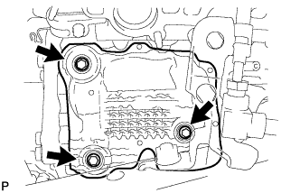
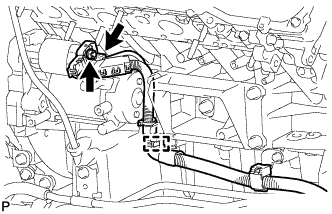
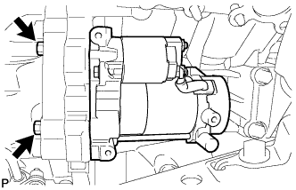
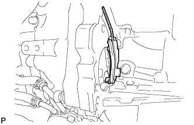

STARTER > REMOVAL |
| 1. DISCONNECT CABLE FROM NEGATIVE BATTERY TERMINAL |
| Condition | Waiting Time |
| Vehicle enrolled in G-BOOK system | 6 minutes |
| Vehicle not enrolled in G-BOOK system | 1 minute |
| 2. REMOVE EXHAUST MANIFOLD SUB-ASSEMBLY RH |
Remove the exhaust manifold sub-assembly RH (Click here).
| 3. REMOVE STARTER COVER |
|  |
Remove the 3 bolts and starter cover.
| 4. REMOVE STARTER ASSEMBLY |
|  |
Detach the starter wire clamp.
Remove the nut and disconnect the starter wire.
Disconnect the starter connector.
|  |
Remove the 2 bolts and starter.
| 5. REMOVE FLYWHEEL HOUSING SIDE COVER |
|  |